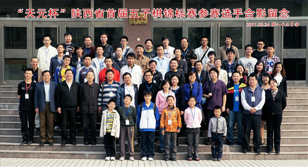

“天元杯”2011年陕西省首届五子棋锦标赛落幕 祁观夺冠
#1 “天元杯”2011年陕西省首届五子棋锦标赛落幕 祁观夺冠 作者：屏蔽 发表时间：2011-9-28 10:46:57
9月24日至25日，“天元杯”2011年陕西省首届五子棋锦标赛在西安市第八十三中学成功举办。本次比赛由陕西省体育局社会体育管理中心主办，陕西天元棋院承办。比赛分为专业组和业余组，专业组按《中国五子棋竞赛规则》七轮积分编排；业余组按民间规则九轮积分编排，每轮两局分先。专业组录取前六名并颁发奖金和证书，业余组录取前六名并颁发证书，前三名同时颁发奖金。每个组别还为未录取的选手中排名最高的女子选手设立了女子优胜奖并颁发证书。比赛不仅吸引了陕西省内的诸多五子棋爱好者，同时亦有多次参加全国赛事的黑龙江知名棋手祁观四段、曾获得首届全国智力运动会五子棋女子金牌的汪清清等专业棋手前来参与。本项赛事也是即将在国庆期间举办的全国五子棋锦标赛和年底举办的全国智力运动会之前一次大好的练兵机会。
比赛首日，专业组祁观四段与陕西本地高手杜卫鹏四段交手，后者执黑在瑞星局中积极变化获得机会，但关键时刻未能持续进攻被对手补成安定形状，最终双方握手言和，其后又与汪清清战和。汪清清在第二轮遭到本地选手尚龙的顽强抵抗，几经较量后双方握手言和，与杜卫鹏2胜2和同积3分。祁观没有遇到更多抵抗，以3胜1和积3.5分暂时领跑。次日第五轮，祁观在与汪清清的关键一战中以极具压迫性的攻击力克对手，扫清了夺冠的一大障碍，杜卫鹏虽然在后三轮比三中以三连胜向冠军发起冲击，但无奈祁观进入状态后无人可挡，最终以半分之差屈居第二。汪清清在第五轮输掉后状态下滑，第六轮再败于本地女子选手刘洪平，最终在次日收获了苦涩的三连败，仅获得第12名。最终，祁观四段以6胜1和6.5分的不败战绩夺冠，杜卫鹏四段以5胜2和6分夺得亚军，刘洪平以4.5分夺得季军，第4-6名分别是齐光威、陈亮和殷桐二段，女子优胜奖为汪清清；业余组方面，李超以6胜3和的战绩凭借累进分的微弱优势力压李雪麟夺冠，后者获亚军，张瑞轩获季军，第4-6名分别是林昊、田宏鹏和王辛英，女子优胜奖为冯娇，常向毅获得“敢斗奖”。
本次比赛在全国五子棋省级比赛规模中名列前茅，无论从宣传报道、比赛编排、活动内容、奖励设置、选手水平、参与人数、纪念赠品均属一流。比赛还吸引了陕西电视台、西安电视台、三秦都市报等多家媒体前来采访报道，为陕西省的五子棋活动推广作出了巨大的贡献。

［ wuxiao 于 2011-9-28 10:53:54 时花20金币送鲜花一朵］
［ 悟石 于 2011-9-28 12:10:31 时花20金币送鲜花一朵］
［ 雅山看黄昏 于 2011-9-28 14:25:14 时花20金币送鲜花一朵］
［ 梦婷 于 2011-9-28 16:51:28 时花20金币送鲜花一朵］
［ 梦婷 于 2011-9-28 16:51:54 时花20金币送鲜花一朵］
［ 梦婷 于 2011-9-28 16:52:04 时花20金币送鲜花一朵］
#2 Re:“天元杯”2011年陕西省首届五子棋锦标赛落幕 祁观夺冠 作者：菜包先生 发表时间：2011-9-28 10:52:37
关注像片右侧...话说，李九字先生你就不能把像片搞得大一点？
［此帖子已被 菜包先生 在 2011-9-28 10:54:52 编辑过］
#3 Re:“天元杯”2011年陕西省首届五子棋锦标赛落幕 祁观夺冠 作者：珍惜你和我 发表时间：2011-9-28 10:54:26
 v5
v5
#4 Re:“天元杯”2011年陕西省首届五子棋锦标赛落幕 祁观夺冠 作者：菜包先生 发表时间：2011-9-28 11:00:21
清清后面的那位皮肤不错，最右侧花格子先生前面那位黄毛丫头五官很精致。。黄毛左边那位很有女人味。。
鉴定完毕。。
#5 Re:Re:“天元杯”2011年陕西省首届五子棋锦标赛落幕 祁观夺冠 作者：华夏使者 发表时间：2011-9-28 11:15:49
引用：眼神真好！！
原文由 菜包先生 发表于 2011-9-28 11:00:21 :清清后面的那位皮肤不错，最右侧花格子先生前面那位黄毛丫头五官很精致。。黄毛左边那位很有女人味。。
鉴定完毕。。
#6 Re:“天元杯”2011年陕西省首届五子棋锦标赛落幕 祁观夺冠 作者：悟石 发表时间：2011-9-28 11:57:51
－ －！
咋比我的官方报到还全面？
人才哇！屏蔽老师回头兼职给陕西当宣传员吧。
#7 Re:“天元杯”2011年陕西省首届五子棋锦标赛落幕 祁观夺冠 作者：悟石 发表时间：2011-9-28 12:08:25
谢谢李老师和大家对陕西赛的关注！#8 Re:“天元杯”2011年陕西省首届五子棋锦标赛落幕 祁观夺冠 作者：蓝天蓝 发表时间：2011-9-28 12:08:35
祝贺 祁观夺冠